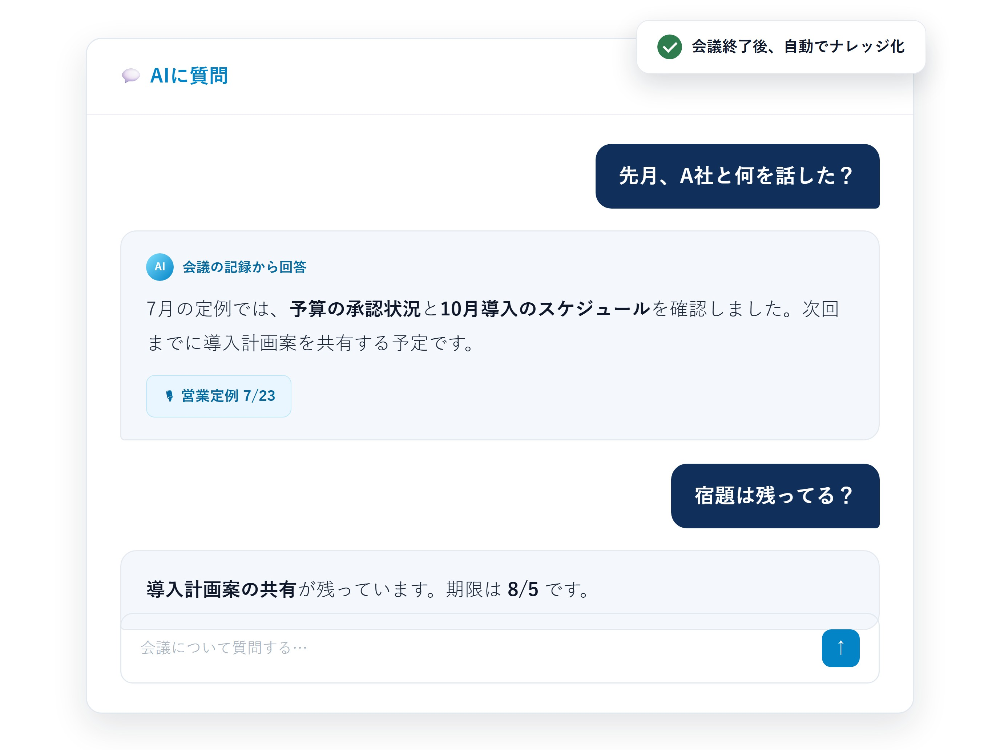
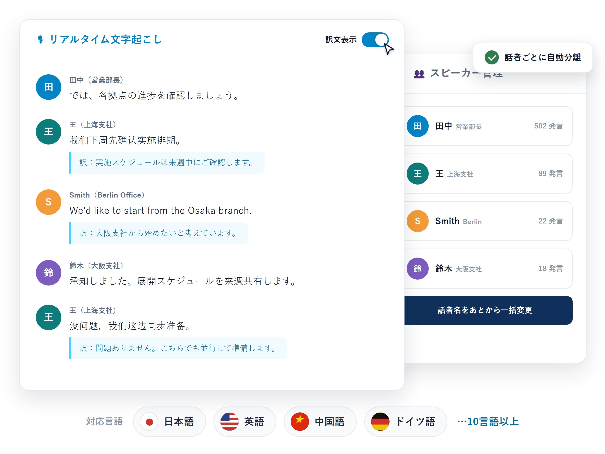
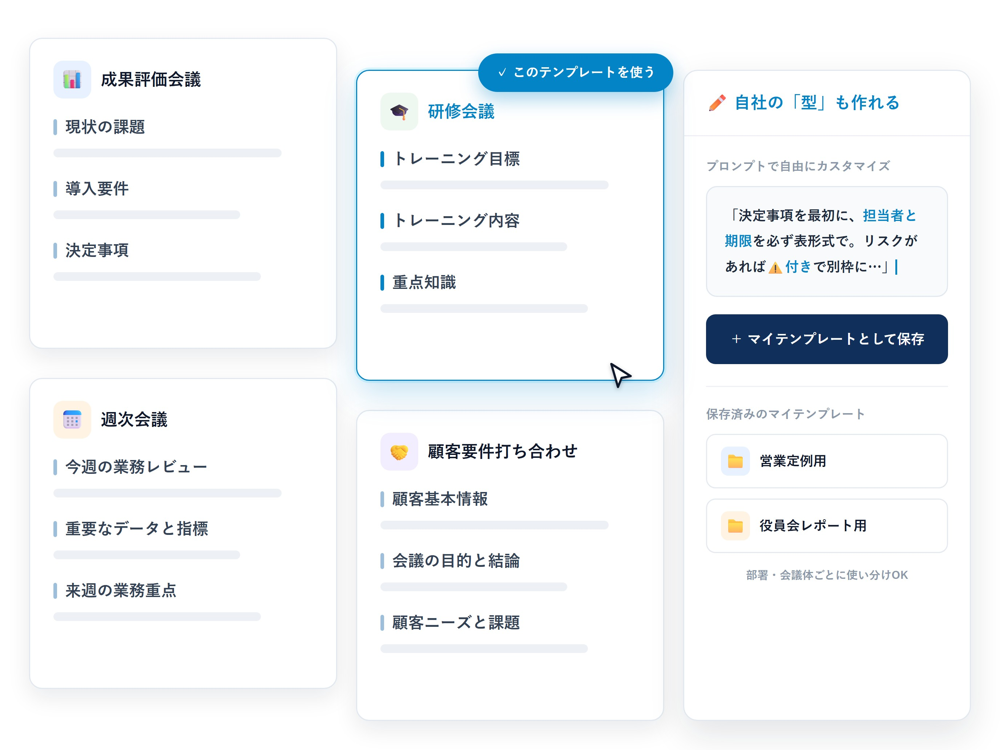
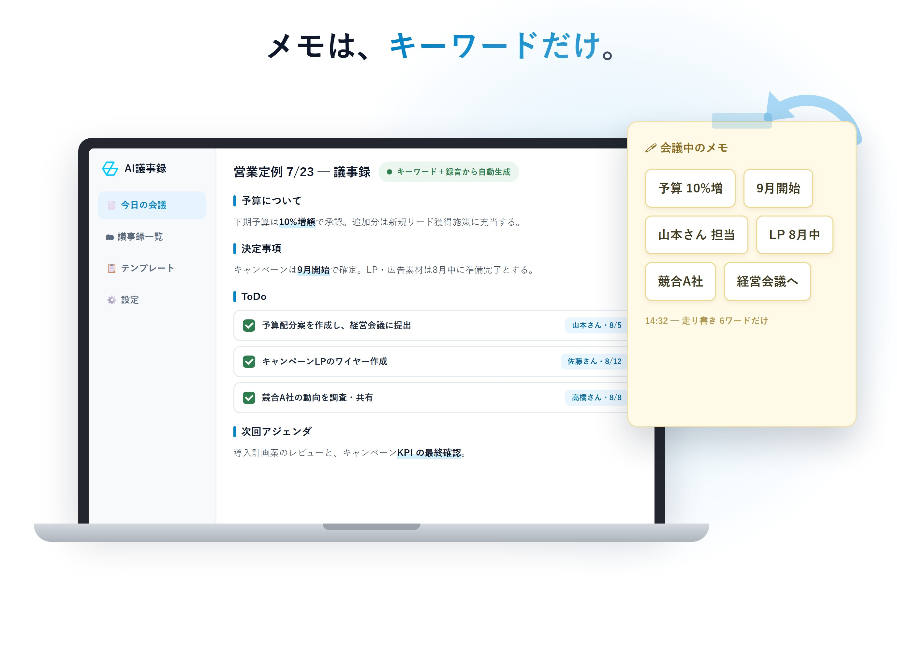
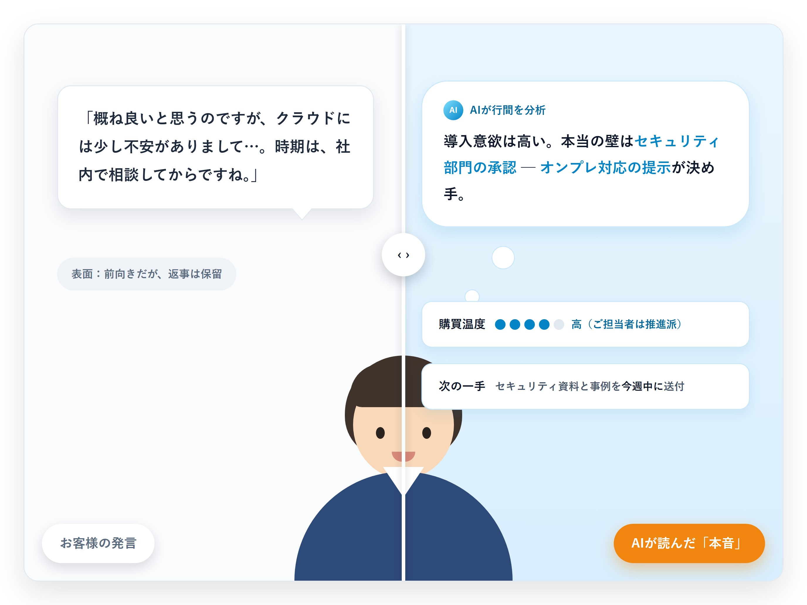

録音から文字起こし・AI要約・ナレッジ蓄積までを一気通貫。
「作って終わり」の議事録ツールではなく、会議のすべてを検索できる知識資産に変える、GBase Knowledge のAI議事録機能です。
✓10言語以上のリアルタイム文字起こし| ✓20分の会議を約4分で解析（※目安）| ✓Web・デスクトップ・iOS対応
営業、グローバルチーム、プロジェクトマネージャー、経営層。
立場は違っても、「会議の記録」に奪われている時間は同じです。
商談中はメモに気を取られ、会話に集中できない。終業後にメモを清書し、お礼メールと社内報告はまた別作業。商談1件に30分以上の「後処理」が発生。
英語や中国語の会議は聞き取りだけで精一杯。議事録は原語から日本語に訳して共有するため翌日以降にずれ込み、ニュアンスの誤訳リスクも残る。
定例の議事録は書き手によって粒度がバラバラ。「前回どう決めたか」を探し回り、次の会議で「あれ、どうなりました？」を繰り返すことに。
どの案件で何が話されたかは、出席者に聞くしかない。担当交代や退職のたびに、商談の文脈と顧客の要望が組織から消えていく。
※ 本ページの解析時間・効果は、GBase Knowledge の実測および社内ベンチマークをもとにした目安です。会議の長さやサーバーの負荷状況により変動します。
文字起こしの正確さだけでは、会議は資産になりません。
ナレッジ化・多言語・テンプレート・ノート補完・インサイト。議事録の「その先」までを、5つの柱として組み込みました。
一般的な文字起こしツールは、議事録の生成で終わります。GBase Knowledge は会議の内容をプロジェクトの知識ベースに自動で蓄積。文書・記事・ノートと同じ場所に整理され、あとから検索することも、AIに質問することもできる「組織の記憶」になります。蓄積した会議の内容は、AIスライド機能で提案資料へ展開することもできます。

日本語・英語・中国語・ドイツ語など、10言語以上にリアルタイム対応。発言は話者ごとに自動で分離し、原語のまま忠実に記録しながら、表示する訳文はワンクリックで切り替えられます。海外拠点との定例も、外国語での商談も、翻訳担当を挟まずそのまま議事録になります。

業種・用途別の議事録テンプレートから選び、ワンクリックで切り替えて再生成。切替前のバージョンは履歴として残るので、比較しながら最適な型を選べます。My Template 機能を使えば、御社の議事録フォーマットをそのまま再現することも可能です。

会議中はキーワードを書き留めるだけ。会議が終わると、AIが文字起こしの文脈と照らし合わせ、断片的なメモを前後関係のある完全な記録に自動で補完します。ノートの内容は要約・議事録の再生成にも反映されるので、「自分の視点」を議事録に残せます。

ミーティングインサイトは、会議が終わると同時にAIが内容を自動分析。口に出されなかった懸念や購買の温度感、解約リスクの兆候を、根拠となる発言と併せてカード形式で提示します。日本の商談で人が担ってきた「空気を読む」を、AIが引き受けます。
※ 現在は先行提供中です。ご利用をご希望の場合は、お問い合わせフォームよりご相談ください。

録音を始めるだけで、文字起こしから要約・ナレッジ蓄積までAIが自動で実行。どのステップも、人の手で調整できます。
Web・デスクトップ・iOS、どこからでもワンクリックで録音を開始できます。
10言語以上の発言を原語のまま転写。訳文の表示切替にも対応します。
会議終了から数分※で、テンプレートに沿った議事録が完成します。
キーワードメモをAIが文脈込みで補完。テンプレート切替や手直しも自在です。
プロジェクトへ自動整理。検索・AIへの質問・次アクション生成に活用できます。
録音から議事録・ナレッジ化まで全自動。テンプレート選択や編集など、人による調整もいつでも可能です。
オンライン会議も、対面の商談も、外出先も。
働く場所に合わせて入口を選べる、マルチデバイス設計です。
会議の一覧・詳細から、要約・ノート・テンプレート切替、AIへの質問まで。録音ファイルのアップロード解析も、ブラウザだけで完結します。
パソコンのシステム音声を直接録音するため、Zoom・Teams・Google Meet など会議ツールを選びません。長時間の連続録音にも対応し、録音終了後は自動でアップロード・解析まで進みます。
デスクトップ版をダウンロード導入前にご確認いただきたい点をまとめました。お問い合わせフォームから個別のご質問もお受けしています。
デスクトップアプリがパソコンのシステム音声を直接録音するため、Zoom・Microsoft Teams・Google Meet など、特定の会議ツールに依存しません。仮想サウンドデバイスなどの追加設定も不要です。対面の会議や外出先の商談には、iOSアプリをご利用いただけます。
日本語・英語・中国語・ドイツ語など、10言語以上にリアルタイムで対応しています。発言は原語のまま記録され、訳文の表示言語はワンクリックで切り替えられます。
20分の会議で約4分、60分の会議でも10分以内が目安です。所要時間はサーバーの負荷状況などにより変動します。
1回あたり最長2時間の連続録音に対応しています。上限が近づくと通知が表示され、続けて新しい録音を開始できます。録音データは分割保存されるため、長時間の会議でもデータ消失の心配はありません。
はい。業種・用途別の議事録テンプレートからワンクリックで切り替えて再生成できます。切替前のバージョンは履歴として保持されます。My Template機能を使えば、御社専用の議事録フォーマットも登録できます。
はい。発言をスピーカー単位で自動分離して記録します。話者名はあとから一括で付け替えることができ、議事録の精度をさらに高められます。
はい。.wav・.mp3・.m4a などの音声ファイルをアップロードして、同じように文字起こし・要約・ナレッジ化ができます。これまでに蓄積した録音資産もそのまま活用いただけます。
会議終了と同時にAIが内容を自動分析し、お客様の本音・リスク信号・次のアクションをカード形式で提示する機能です。現在は先行提供中のため、ご利用をご希望の場合はお問い合わせフォームよりご相談ください。
議事録はプロジェクトの知識ベースに自動で蓄積され、文書やノートと横断で検索できます。チャットで@引用してAIの回答根拠にしたり、お礼メール・次回アジェンダの下書きを生成したりと、会議後のアクションまで支援します。
GBase Knowledge プラットフォーム上で動作し、ISO 27001 認証取得済みのセキュリティ仕様に準拠します。会議データは隔離されたテナントで管理し、第三者に共有されることはありません。詳細な仕様書は営業担当よりご提供します。